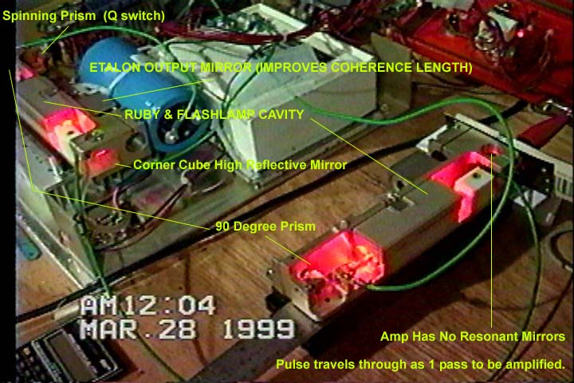

Home Return to Main Page
Notes on a Ruby MOPA 1 Arrangement
The purpose for this
arrangement is test a MOPA (Master Oscillator and Power Amplifier) setup.

First Tank laser is operated in Q switch mode and produces a 100 millijoule 40 nanosecond single multimode pulse. This pulse then enters second tank laser where the Q switch motor and prism has been removed. The right angle prism reflects the pulse into the second ruby rod/flashlamp cavity to be amplified to 240 millijoules. The HR prism has been removed and so the pulse continues on from the second laser and hits a target to record pulse fire. This second laser then is the single pass amplifier to the first laser. This Black film target is laying up against the end of the second laser and you can see previous pulse hits (three spots) to it after it had been repositioned back. Behind the Blue capacitor is timing circuits to fire the flashlamp based on the magnetic pickup on the q switch. This pickup signals the spinning prism location and NE556 timers delay the signal for the correct firing delay inorder to fire the flashlamp and at the time when the flashlamp pulse pump-ruby gain reaches maximum the Q switch prism sweeps the correct position. The Flashlamps are fired from a common trigger transformer (series inductor) seen just below the first laser (black round object in silicone). The red control panel above the lasers is the front panel cover to the laser case and the laser chassis was slid out on to the bench for this experiment Note , this laser setup was for the single laser but the additional capacitance (3 blue 3900ufd caps in series) and sharing the trigger was an after thought in order to test a MOPA. This parallel connection (instead of series) is not a good configuration because the power source is now greater than any one flashlamp can handle. If one lamp fails to fire then the entire power would go through the other lamp causing it to explode (I didn't have the extra (2X) voltage to run the experiment in a series arrangement and these caps wouldn't have handled it anyway).
Unit description The ruby is a 3"x 0.25" rod with AR coat ends. The flashlamp is a 4mm bore with 3" arc length. A 2 plate/1 air gap etalon serves as the output coupler. An AR coated roof prism is the HR and two AR coated right angle prisms fold the resonator of about 12 inch length. One of the right angle prism is mounted on a motor for q switch output. The motor runs at 30,000 rpm depending on voltage (around 15v). The typical original output for these units are 50 mj single 40 nanosecond multimode pulse from around 100-150joule electrical input. The above experiment was run at 900 joule input (450 to each).